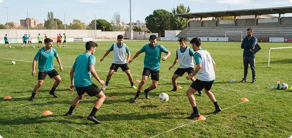

MS
Marta Sánchez
Analista de rendimiento · Hace 2 h
El análisis empieza mucho antes del vídeo. Esta semana trabajamos la ocupación de espacios con el equipo juvenil: menos datos, mejores preguntas y tareas que conectan con el juego.

¿Cómo trasladáis las conclusiones del análisis al entrenamiento?
24 personas interesadas · 6 comentarios